Results
American Eagle with Red to White to Blue Dispersion Spectra (laser being pointed at the eagle):
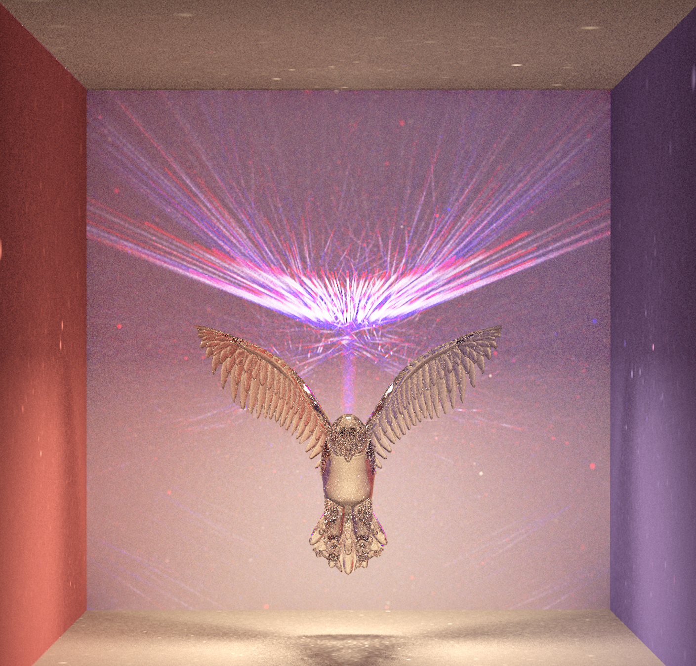Comparisons of Different Color Spectra Implemented:
 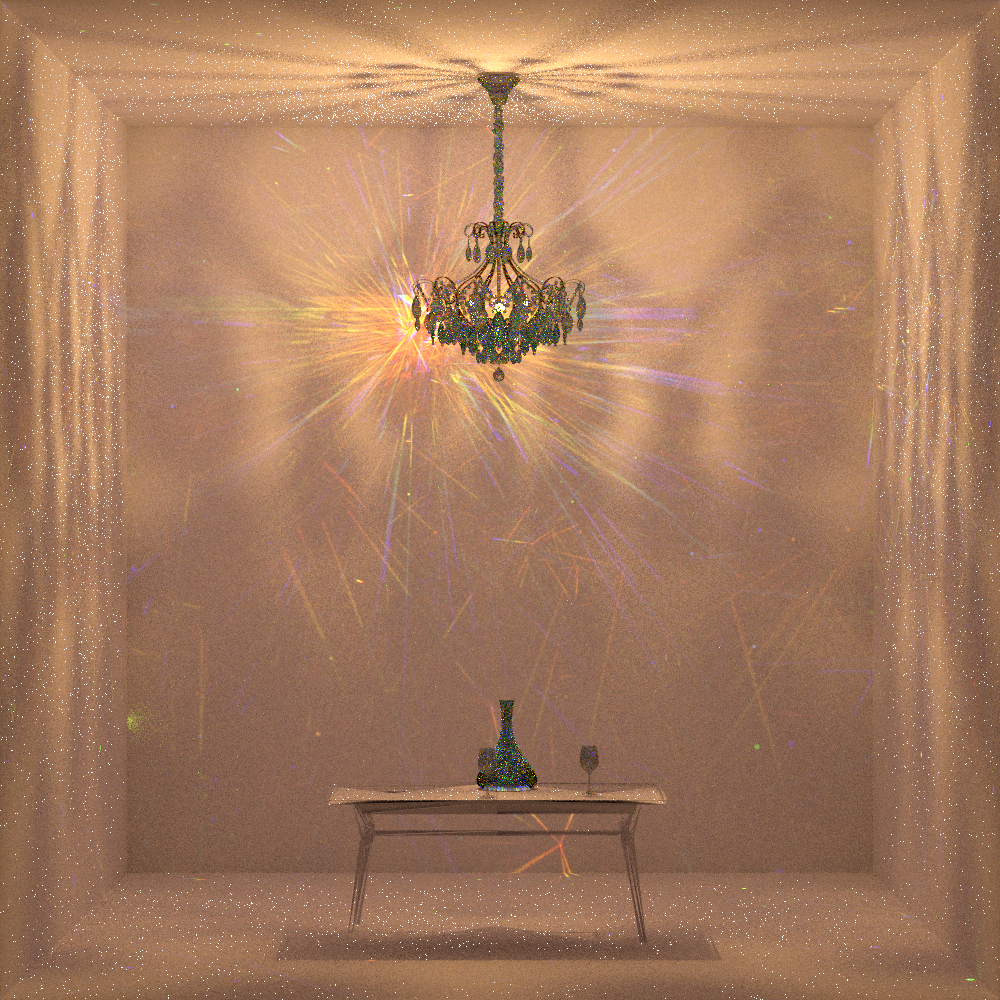
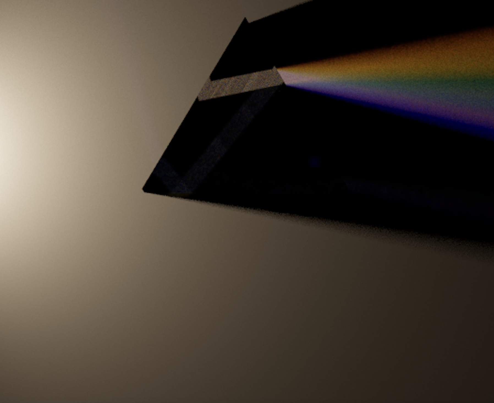
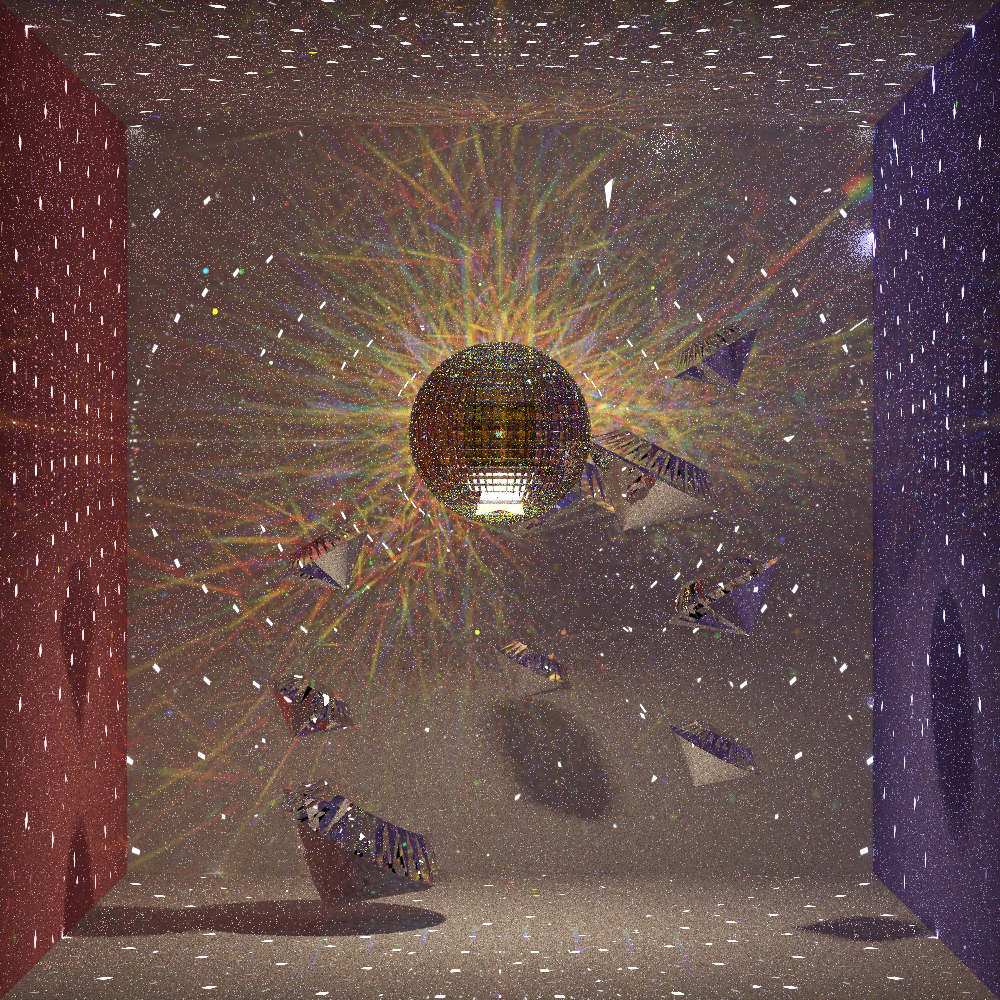
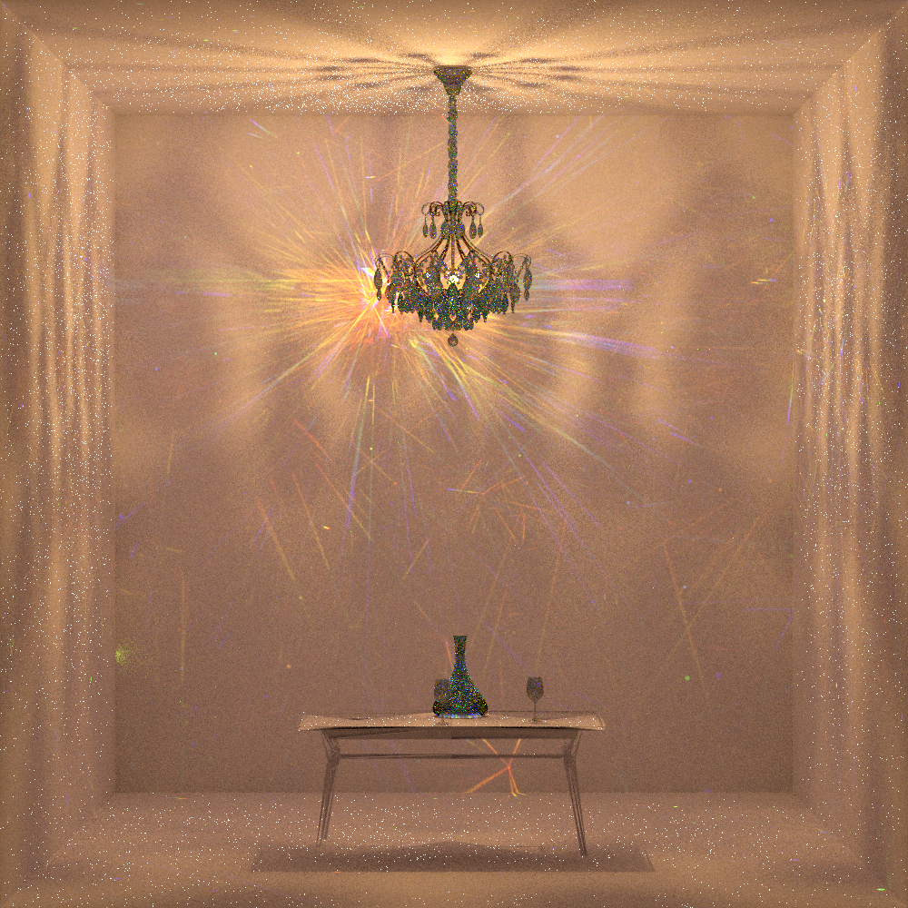
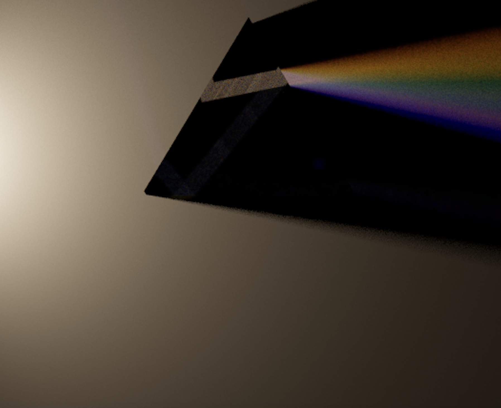
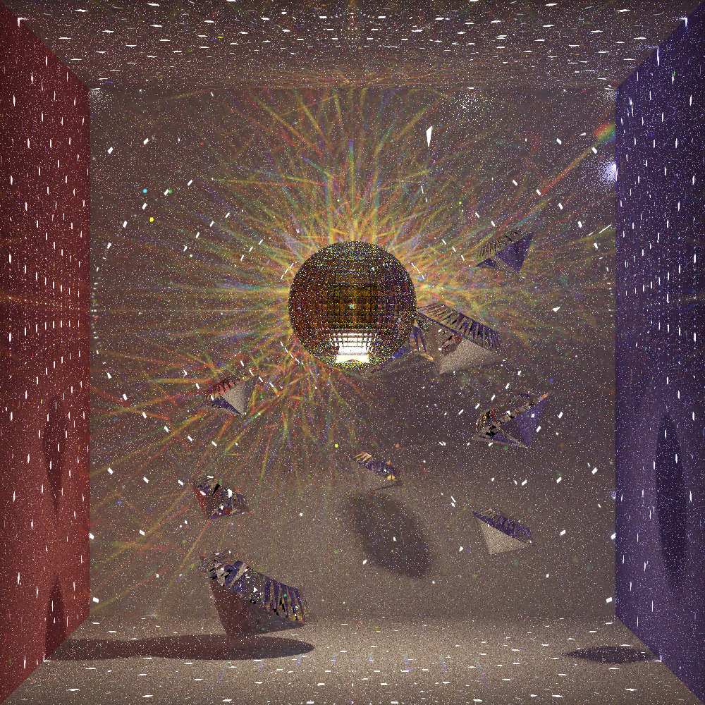


Team Members: Nick Drian, Ruby Werman, Jen Buja and Jake Martin
We implemented dispersion using photon mapping. We altered and added to an open source program that implements photon mapping in order to render custom scenes created in Blender. We began by modifying the photon mapping software to implement our dispersive BDSF. We accomplished this by sampling the wavelength of photons, normalizing the index of refraction, and changed the transmittance of materials to perform color gradient interpolation. We designed custom Cornell box scenes using Blender and integrated them into the software to display our dispersive BDSF. We created light objects within our scenes by creating objects within the software and assigning them to have a light material. Using this method, we created laser light objects to create a directed beam of white light onto the dispersive objects. Once completing integration, we created visually interesting scenes shown in our final results.
We found and modified a photon mapping library found on github. This library was already capable of producing high quality caustics which is ideal for the purposes of simulating dispersion. The latest version of the library required a more recent C++ compiler than anyone in the group was able to install so we had to checkout a previous commit which was able to be successfully built on our PCs.
The Dispersive BSDF we created in the photon mapping library differed from the preexisting refractive BSDF in two ways. It samples a wavelength uniformly between 380 - 700nm and recalculates the ior and the transmittance of the material based on this wavelength. The BSDF can be enabled in the program by giving a refractive material a "isDifractive" property and setting it to true. A "difractivity" property also has to be given to the material and it needs to be assigned a double (0.5 works well).
The Monte Carlo Raytracer Library uses a scene file format defined using JSON. The JSON file contains information about the photon map, bvh, camera, surfaces, materials, and vertices. In order to render different objects, we used a combination of OBJ files and simple shapes that are defined by vertices. We modified the diffractive element of our scenes by adding two new attributes: `isDifractive` and `difractivity.` We used Blender to create models and then exported them as OBJ files. We then are able to read the OBJ files in our JSON file. Our original approach was to use DAE files with the 3-2 pathtracer code. We used the DAE file of the Cornell Box as a starting point and then created new shapes inside the box. To get more complex shapes, we followed some blender tutorials and also utilized open source models from Sketchfab. Next, we switched to OBJ files. We were able to reuse the Cornell Box obj files and then swap out new OBJ files for the center object during testing and image creation.
Enabled support within the photon mapping library for a new light type which is a perfect laser. It is enabled by giving a light in the program a "isLaser" property and setting it to true. Along with this, the laser direction and its Red, Green and Blue intensities need to be defined in the Light object within the JSON scene. Lasers can be set to different colors, unrealistically high intensities and the rays are perfectly parallel meaning the laser doesn't lose intensity due to the inverse square law.
The biggest lesson we learned from our final project is how to work on a team developing a project. Coding in teams has had its challenges. From managing a joint repository to trying to make our code legible to our partners, we gained a lot of experience collaborating on code. It was great to be able to divide and conquer to get tasks done in parallel, but it was even more useful to discuss our ideas together and work through difficult problems. We also learned a lot about reading a new code base and implementing code that is compatible with existing code. We realized that we needed to move from using dae files to using obj files integrated into a json file. Without developing our skills reading code bases, this would not have been possible. When creating these custom objects, we also learned how to use CAD software, which most of us had never used before.
American Eagle with Red to White to Blue Dispersion Spectra (laser being pointed at the eagle):
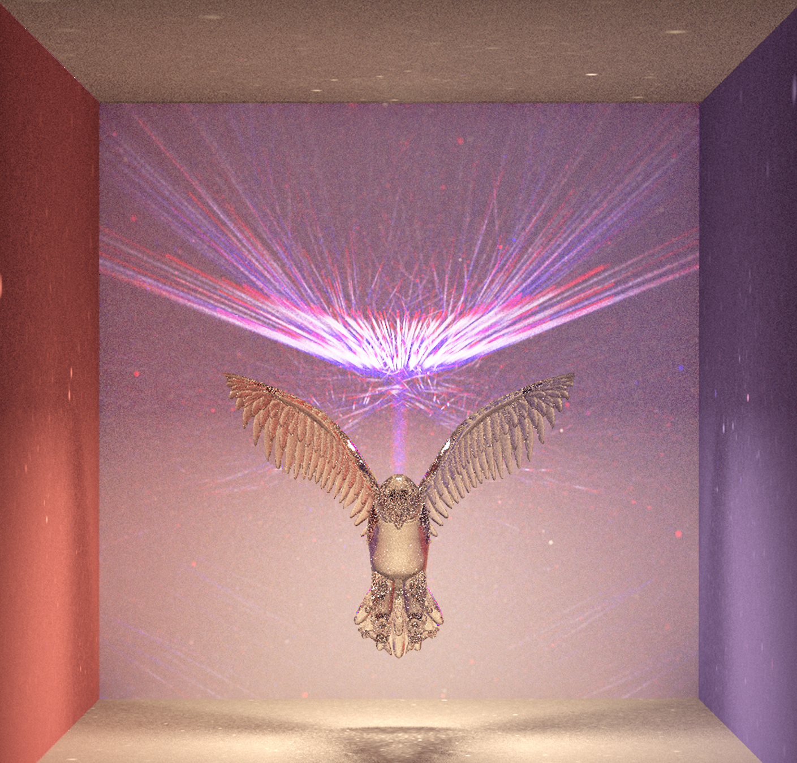Comparisons of Different Color Spectra Implemented:
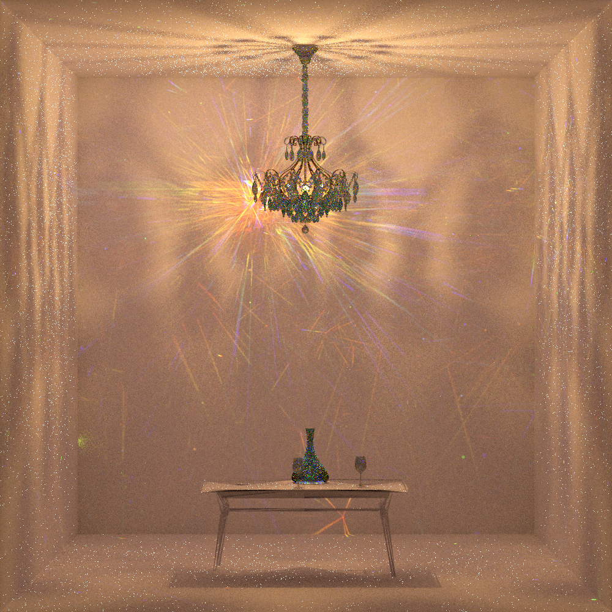
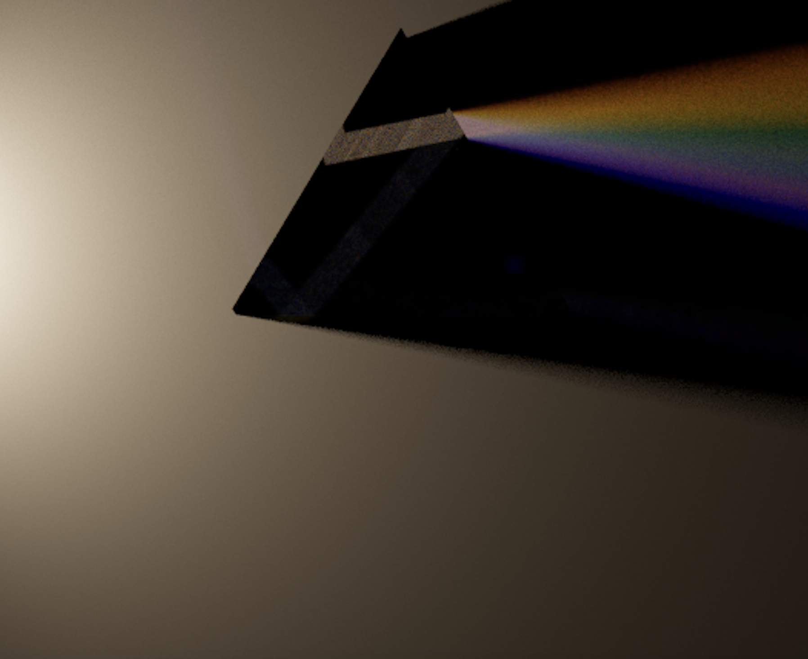
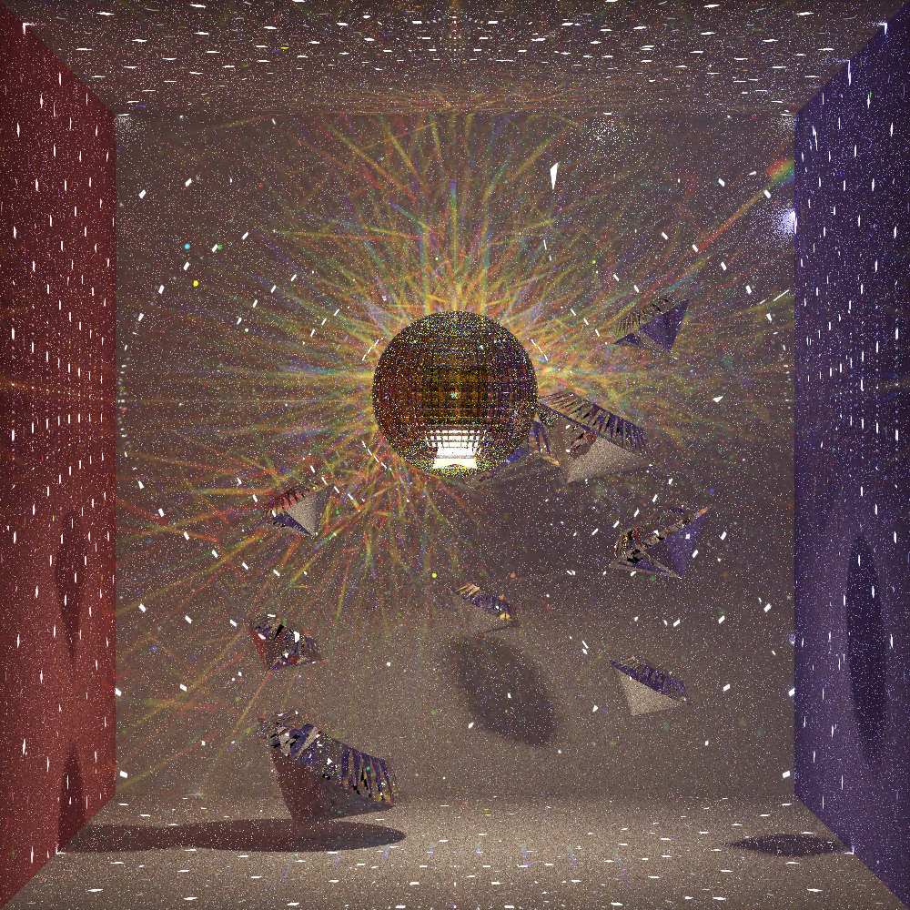
Paper on Prisms, Rainbows, and Rendering Light Dispersion
Paper on Rendering Light Dispersion Using a Composite Spectral Model
Dispersion Using Monte Carlo Rendering
Monte Carlo Ray Tracing GitHub Repository
Princeton Photon Mapping Slides
"Wine Glass" (https://skfb.ly/6WVSC) by cleisonrodrigues is licensed under Creative Commons Attribution (http://creativecommons.org/licenses/by/4.0/).
"Eurosvet 10080/6" (https://skfb.ly/oqx9R) by Lustron.ru is licensed under Creative Commons Attribution (http://creativecommons.org/licenses/by/4.0/).
"Glass carafe, flagon with cork" (https://skfb.ly/6S7tE) by SusanKing is licensed under Creative Commons Attribution (http://creativecommons.org/licenses/by/4.0/).
"Disco Ball" (https://skfb.ly/NyAH) by araghon007 is licensed under Creative Commons Attribution (http://creativecommons.org/licenses/by/4.0/).
"Day 23 - Wild Eagle" (https://skfb.ly/6QTWL) by Ida Faber is licensed under Creative Commons Attribution (http://creativecommons.org/licenses/by/4.0/).
"Air Balloons" (https://skfb.ly/ontOs) by leha_pu is licensed under Creative Commons Attribution (http://creativecommons.org/licenses/by/4.0/).
Jake: Found the photon mapping library and got it ready to be modified for dispersion. Contributed to brainstorming how to implement the feature. Implemented change in IOR function, color bucketing function and helped implement color gradient interpolation function. Added support for JSON entries in the C++ photon mapping library. Implemented lasers in the photon mapping program. Put together the American eagle photo and the Dark Side of The Moon album cover remake.
Ruby: I worked on building models for the scenes using the photon mapping library and Blender. I started by getting the 3-2 .dae files to render with our new photon mapping library. Then, I built new models using open-source models from Sketchfab and Blender. I then worked on making our 3D models compatible with the photon mapping code by adding to the JSON files. I also worked with Jake to improve the color bucketing function by adding interpolation.
Jen: I helped Ruby with building the models for the Cornell box scenes. I worked on building the first version of the prism scene and built the chandelier scene using open source models. I worked on getting different kinds of lights in each scene. I figured out how to create light objects and diffuse objects within the photon mapping software without building the object in Blender. I helped gather and manage the materials for deliverables, polished the final presentation deck, and recorded the midpoint and final deliverable video.
Nick: I began by researching the conversion from RGB space to Frequency space and creating the utility functions for that. I then helped brainstorm about the implementation of dispersion within the opensource photon mapping project that we used. Lastly, I designed some kaleidoscope-like meshes in Rhino7 and linked them into our virtual scene in order to produce some nice renderings that demonstrate the beauty of dispersion.